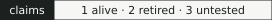

claims.yaml
One file per tool, claims/<tool>.yaml, lists the tool's claims. Each claim has the claim in plain words, the result that would retire it (kill), the data it is tested on (scope), and a test. The file never states a verdict. scripts/claims.py runs each test and sets the status:
- table, table_bins, table_max, table_count_passing: recomputed from results.parquet on every build.
- record, record_compare: a number quoted from the experiment inventory (data/experiments.json, copied from seanome/2024-kmerseek-analysis at commit fe72334b, PR 97; recorded in data/experiments.SOURCE.json). The quote must match the recorded value character for character, so a notebook that changes a number fails the check until the claim is updated.
- not_run: no test yet; the claim is untested and the reason is shown.
A test may carry a verdict: the wording of its verdict line, with the resolved numbers filled in. Without one, the line is the test's own result.
A claim retired by a record test is dated with the date of that inventory record. A claim retired by a table test has no date, because the tables are recomputed on every build and the build cannot tell when the claim was first disproved. The "last disproved" date on a card counts only dated results.
The full schema: claims/schema.json. The first claim of claims/kmerseek.yaml:
- id: phmmer-parity-mammals
claim: Parity with phmmer inside mammals
kill: Fmax more than 0.05 from phmmer's on any of the 6 mammals
scope: Swiss-Prot features, raw calls, setting hp_thomas_dill2_k24_lcFalse, 998 human queries
test:
kind: table
experiment: qfo_region_midi_plus
truth_source: Swiss-Prot features
dedup_or_raw: raw
stratum_axis: all
stratum_bin: all
metric: fmax
tool: kmerseek
setting: hp_thomas_dill2_k24_lcFalse
against: {tool: hmmer3_phmmer, setting: default}
targets: [QfO ptroglodytes, QfO rnorvegicus, QfO clupus, QfO btaurus, QfO mouse, QfO mdomestica]
kill_if: {abs_difference_above: 0.05}
context:
- label: on Pfam domains, the best kmerseek setting for each mammal
test:
kind: table
experiment: qfo_region_midi_plus
truth_source: Pfam-A domain instances
dedup_or_raw: raw
stratum_axis: all
stratum_bin: all
metric: fmax
tool: kmerseek
setting: best_per_target
against: {tool: hmmer3_phmmer, setting: default}
targets: [QfO ptroglodytes, QfO rnorvegicus, QfO clupus, QfO btaurus, QfO mouse, QfO mdomestica]
kill_if: {abs_difference_above: 0.05}
- label: settings that pass on Swiss-Prot features (raw or dedup)
test:
kind: table_count_passing
experiment: qfo_region_midi_plus
truth_source: Swiss-Prot features
stratum_axis: all
stratum_bin: all
metric: fmax
tool: kmerseek
against: {tool: hmmer3_phmmer, setting: default}
targets: [QfO ptroglodytes, QfO rnorvegicus, QfO clupus, QfO btaurus, QfO mouse, QfO mdomestica]
kill_if: {abs_difference_above: 0.05}
evidence: {label: leaderboard, href: index.html}Badge and CI check
Every push and pull request runs python scripts/claims.py --check in a GitHub Action (.github/workflows/claims.yml). It fails when a file breaks the schema, a quote no longer matches its record, or a table test cannot find its rows. A second job rebuilds the site from data/ and fails if any page differs from the committed one. The build also writes a badge per tool from the same verdicts:
